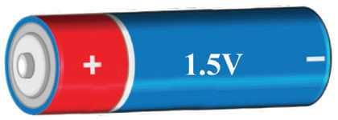
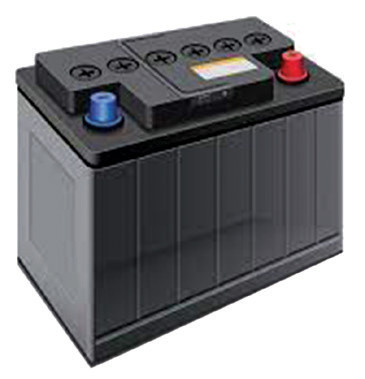

Electric current is defined as the rate of flow of electric charge through a conductor over time . This relationship is expressed mathematically as
But, where is the number of electrons and is the charge of an electron. Therefore,
In simpler terms, current measures the amount of charge that passes a given point in a circuit per unit of time. This charge is carried by charged particles such as electrons or ions. A higher current indicates a greater flow of charge.
Electromotive force
The electromotive force (e.m.f) is the potential difference across the terminals of a source when no current is flowing. It provides the energy required to move electrons through a conductor, leading to an electric current. Note that the word “force” in this case does not mean the force of interaction between bodies. One may draw an analogy of e.m.f to water pressure. When the pressure is high, more water flows through a pipe. Similarly, with higher e.m.f, more electrons flow through a conductor. Sources of e.m.f include electrochemical cells such as dry cells and car batteries, thermoelectric devices, solar cells and electric generators. Labels of potential difference values written on a battery or cell refer to its e.m.f. Figure 2.2(a) shows a dry cell whose e.m.f is 1.5 V, and (b) a car battery whose e.m.f is 12 V.


Potential difference (p.d)
When an electric device such as a bulb is connected to a cell, electric current flows through the device, and some of the electrical energy is converted into light and heat. The amount of energy converted per unit charge equals the potential difference (p.d) across the device. Alternatively, electric potential